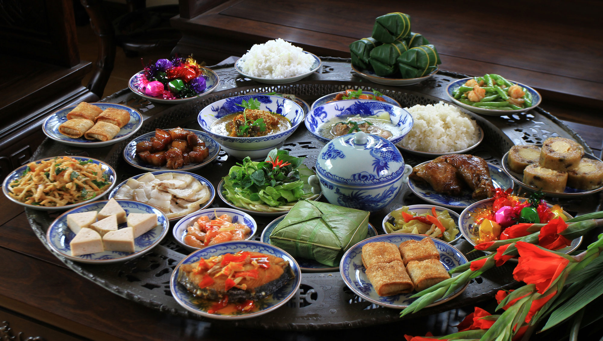

ẨM THỰC LỄ TẾT GỒM

Ẩm thực Việt Nam đa sắc màu là sức hút “siêu to, khổng lồ” của đất nước hình chữ S. Cùng VIETNAMFOOD khám phá xem món ăn đường phố Việt Nam nào đang “gây bão” các diễn đàn ẩm thực trên thế giới nhé!
Cỗ bàn thường sử dụng nhiều món ăn trong đó nhấn mạnh đặc biệt các món mặn dùng nguyên liệu động vật, loại trừ tất cả những món ăn ngày thường như rau luộc, dưa cà...
1. Cỗ cúng tổ tiên
Cúng tổ tiên (ngày giỗ chạp, ngày tết cổ truyền) thường sử dụng xôi đậu xanh, xôi gấc với gà luộc nguyên con hoặc chân giò. Cúng người mới mất chỉ dùng xôi trắng và một quả trứng luộc.
2. Cỗ Tết
Cỗ tết truyền thống rất cầu kỳ, mâm cỗ cơ bản thường là 5 bát: bóng, miến, măng, mọc, chim hoặc gà tần và 5 đĩa: giò, chả, gà hoặc vịt luộc, nộm, xào. Ngày nay mâm cỗ tết đã có nhiều thay đổi về thực đơn theo xu hướng tinh giản, chú trọng "chơi" hơn "ăn".-
Một mâm cỗ nông thôn trong lễ ăn hỏi
Đám ăn hỏi thường sử dụng đồ ăn như lợn sữa quay nguyên con, gà luộc đặt trên mâm xôi (thường là xôi gấc), bánh phu thê, bánh cốm, mứt sen, chè, rượu, trầu cau. Thường lễ vật được làm theo số lượng chẵn và đặt trên các mâm hoặc tráp theo số lẻ. Tiệc cưới có thực đơn tương tự các bữa tiệc khác, thường phổ biến là thực đơn khoảng 10 món với một món ăn khai vị (xúp), một món cơm gạo ngon, một món xôi (thường là xôi gấc), một món canh, một món cá, hai món thịt, một món rau xào nấu, một món nộm, một món tráng miệng.
3. Tiệc tùng
Tiệc có nhiều loại, tuy nhiên theo truyền thống thường là một dạng cỗ với nhiều món ăn mặn, nem, rau, nộm, món tráng miệng, và rượu hoặc bia uống kèm. Ngày nay tiệc có thể sử dụng một số hình thức cách tân như tiệc đứng với các món ăn kiểu Âu, tiệc cơ bản với những món nấu theo trọng tâm (như thuần món cá, thịt chó, thịt bò, thịt dê).
4. Đồ cúng
Tùy theo dạng thức cúng và văn hóa các vùng miền, nhiều loại đồ lễ cúng bái cũng có sự khác biệt ít nhiều như Cúng tất niên, tết nhất (dùng bún măng, bánh chưng, dưa hấu, ngũ quả, thịt nguội), cúng đầy tháng (dùng xôi gấc, bánh hỏi thịt quay), cúng đất đai (rượu nếp, gạo, cơm trắng, muối), cúng cô hồn (mía, bánh kẹo, trái cây, cháo trắng), cúng sao (các loại chè).
 VIETNAMFOOD
VIETNAMFOOD